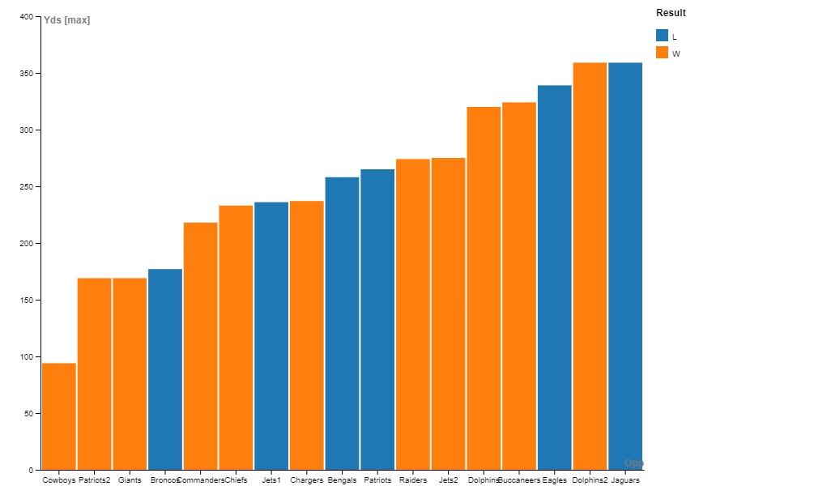

<!DOCTYPE html>
<html lang="en"></html>
<html>
<head>
  <meta http-equiv="content-type" content="text/html; charset=UTF-8">
  <title>Buffalo Bills Fan Page</title>
  <link rel="stylesheet" type="text/css" href="styles.css">
</head>
<body>
  <header>
    <div class="header-content">
        <a href="index.html" class="logo">Buffalo Bills Fan Page</a>
        <nav>
            <a href="index.html">Home</a>
            <a href="about.html">About</a>
            <a href="media.html">Media</a>
        </nav>
    </div>
</header>

  <nav>

  </nav>
  <h1>This page is dedicated to, and contains information about the Buffalo Bills NFL Team!</h1>
  Hello world! I am Ryan McGowan and I am a huge 
  <span class="billsRed">B</span><span class="billsBlue">u</span><span class="billsRed">f</span><span class="billsBlue">f</span><span class="billsRed">a</span><span class="billsBlue">l</span><span class="billsRed">o</span> 
  <span class="billsBlue">B</span><span class="billsRed">i</span><span class="billsBlue">l</span><span class="billsRed">l</span><span class="billsBlue">s</span> fan!<br>
  <br>
  <a href="https://www.pro-football-reference.com/players/A/AlleJo02.htm" target="_blank">
    
  </a>
  <br>
  <ol>
    <li>Josh Allen does not need to play like superman for the Bills to win, hence the 89 pass yards against the Cowboys</li>
    <li>Josh Allen has only one game with less than 100 passing yards</li>
    <li>Josh Allen will win the Super Bowl</li>
  </ol>

</body>
</html>
